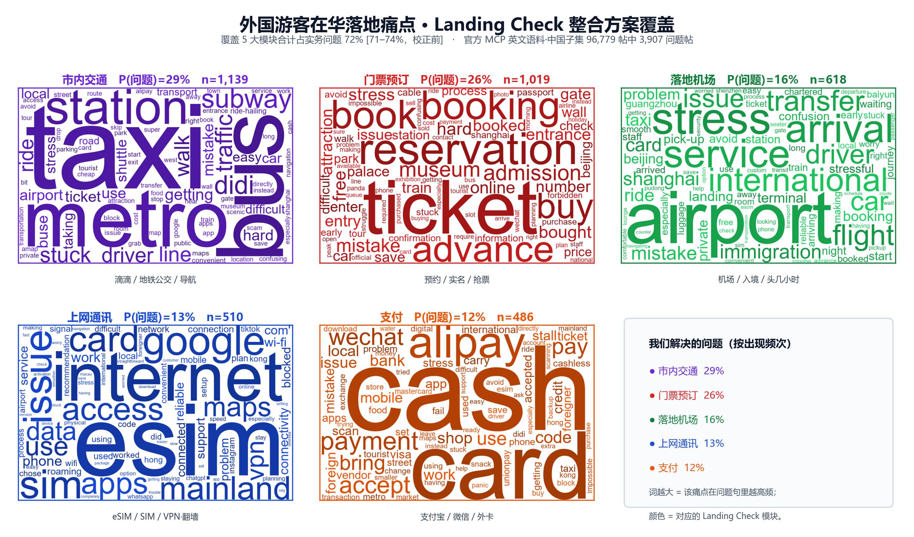

游客来华最常卡在哪里？
我们用 89.6 万条真实原帖找答案。
我们抓取了公开旅行社区在 2025-10 至 2026-10 的英文旅行笔记，筛出与中国相关的内容，逐句识别"真正在描述问题"的句子，统计首次来华自由行游客最常遇到的实务痛点——并据此确定 Landing Check 要解决的五大模块。
数据源：官方 MCP 英文旅行笔记导出 · 规则统计 · 不改写原帖从 89.6 万条原帖，筛到 3,907 条真实"问题帖"
我们不把点赞当需求。每一层都有明确口径：先锁定与中国相关的内容，再逐句判定是否"真的在说问题"（并剔除"没问题""别担心"这类否定与宽慰）。
注：英文语料以正面攻略/种草为主，真正写问题的占少数，所以 4% 的问题密度是信号而非噪声——它让我们能聚焦"卡点"，而不是泛泛的热门话题。
先听游客自己怎么说
下面每一条都是语料里的真实英文原帖（原句保留、未改写），正是这些具体的求助与吐槽，被我们逐句归类、汇总成后面的统计。鼠标悬停可暂停。
共 7,151 条问题句，此处为按模块抽样展示的代表原句。颜色对应下方的五大模块。
一张图看清：我们解决的痛点 × 整合方案
把高频痛点词按所属模块上色，就得到 Landing Check 的覆盖全景。市内交通、门票预订、落地机场、上网通讯、支付五大模块——其中门票预订为新增覆盖。

这意味着：把这五件事做顺，就覆盖了外国游客落地中国约七成的实务卡点（问题口径）。新增"门票预订"后，覆盖率从四模块的 51% 提升到 72%。若按更广的"需求∪问题"口径（n=22,354，含提问与攻略），五大模块覆盖升至约 80%——详见项目主页需求板块。
实务问题出在哪里：P(类别 | 问题)
在 3,907 条问题帖里，每一类问题被提及的比例（多标签，可叠加）。深蓝＝ Landing Check 已覆盖的五大模块。
"被提得多"不等于"最痛"
我们用 lift = P(类别 | 问题帖) ÷ P(类别 | 需求帖) 衡量"一写到就多半在吐槽"的程度。>1 表示该类更集中于"问题"，而非中性提及。
一写到就多半在吐槽（lift 高）
提及未必多，但只要出现，往往是出了问题。
高频提及、但多为攻略说明（lift 低）
天天被写，但更多是"怎么做"的攻略，而非失败。
产品启示：支付、门票这类高频低-lift 的场景，更需要"把现成办法讲顺"（教程/引导）；安全、上网这类高-lift 场景，更需要"在出问题时兜住"（现场排障）。两种产品形态，都要做。
聚类与统计方法
全流程规则化、可复现、不依赖大模型打分，便于逐条核对与审计。
多语言规则词典
13 个实务类别、各含子话题，用英/中/俄/泰多语言关键词匹配。无 LLM 打分，每一次命中都能回溯到具体词与原句。
问题信号识别
逐句检测 problem / advice / question 信号；并先剔除"no problem""don't worry""stress-free"等否定与宽慰说法，避免把安心话误判成问题。
P(类别 | 问题) 双口径
多标签（可叠加）＋平均分摊（各类合计 100%，用于占比）。一句话里出现"问题信号＋类别"即计为该类的一次问题事件。
自助法置信区间
按作者聚类的 bootstrap（1000 次）给出 95%CI；本英文语料无作者字段，降级为帖子级 bootstrap，并在局限中如实说明。
lift 与共现
lift 衡量"问题集中度"；共现矩阵找常一起出现的痛点（如"上网×实名/手机号"lift 2.36），指示应打包解决的组合。
NMF 主题聚类
对每类问题句做 TF-IDF（含二元词）→ NMF 主题分解，簇数由 UMass 一致性自动择优，人工命名并附代表原句，用来发现词典之外的新问题类型。
⚠ 诚实的局限（已写入报告）
- 仅英文、仅"提到中国"的子集；非英语人群与海外内容不在内。
- 无作者/地域/评论字段：置信区间为帖子级；国际 vs 港澳台对比、评论区互证暂无法做。
- 精度校正待人工抽检 260 句后补齐，当前为校正前口径；召回率按类别无法估计。
痛点已验证，去看我们怎么解决
五大模块来自上面的数据。回到项目主页，看产品形态与可交互原型如何逐一落地这些卡点。